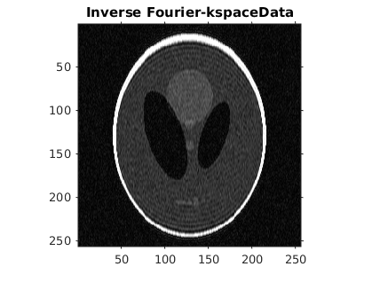
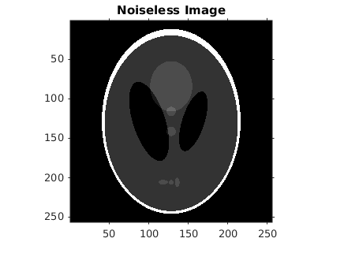
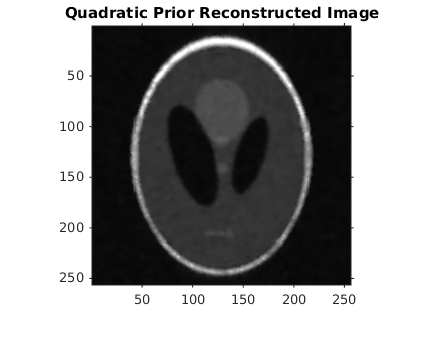
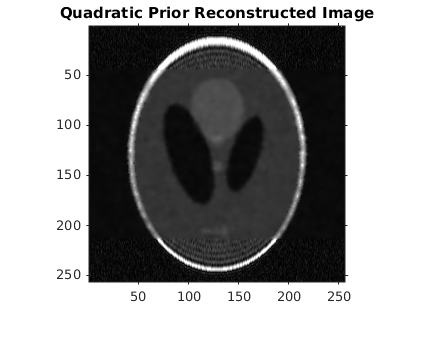
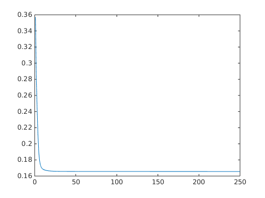
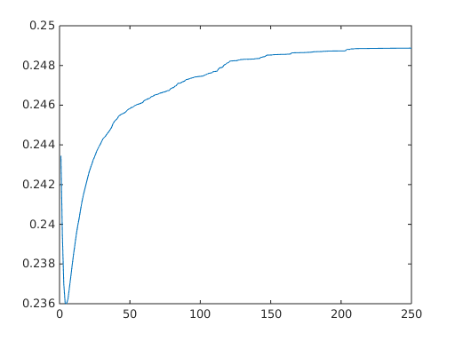
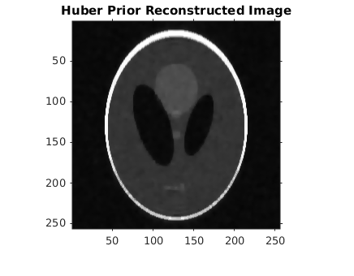
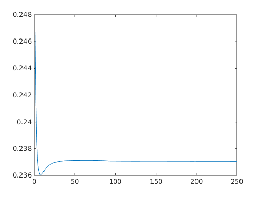
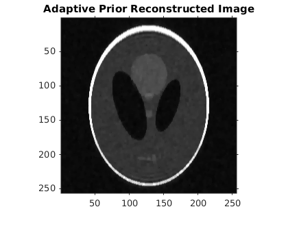

Contents
addpath 'mrf';
addpath 'mrf_derivatives';
addpath '../../common/';
load('../data/assignmentImageReconstructionPhantom.mat');
min_rrmse = 10000000;
best_estimate = 0;
display(strcat(['RRMSE (Noiseless Image, Inverse Fourier-kspaceData) : ' ...
num2str(abs(rrmse(imageNoiseless, abs(ifft2(imageKspaceData))))) ]));
figure; imshow(abs(ifft2(imageKspaceData))); title('Inverse Fourier-kspaceData');
figure; imshow(imageNoiseless); title('Noiseless Image');
RRMSE (Noiseless Image, Inverse Fourier-kspaceData) : 0.26123
 
Quadratic Prior 1
algorithm = 1;
best_alpha = 0.180;
best_gamma = 0.000;
plot = 1;
estimate = applyGradientDescent(imageKspaceData, algorithm, best_alpha ,best_gamma, imageKspaceMask,imageNoiseless,plot);
display('Quadratic Prior');
display(strcat( ['Best alpha :' num2str(best_alpha)] ));
display(strcat( ['Best gamma :' num2str(best_gamma)] ));
display( strcat(['RRMSE (Noiseless Image, Reconstructed Image) : ' num2str(abs(rrmse(imageNoiseless, estimate))) ]));
figure; imshow(abs(estimate)); title('Quadratic Prior Reconstructed Image');
plot = 0;
estimates_1 = applyGradientDescent(imageKspaceData, algorithm, 1.2*best_alpha ,best_gamma, imageKspaceMask,imageNoiseless,plot);
estimates_2 = applyGradientDescent(imageKspaceData, algorithm, 0.8*best_alpha ,best_gamma, imageKspaceMask,imageNoiseless,plot);
display( strcat(['RRMSE 1.2 times alpha : ' num2str(abs(rrmse(imageNoiseless, estimates_1))) ]));
display( strcat(['RRMSE 0.8 times alpha : ' num2str(abs(rrmse(imageNoiseless, estimates_2))) ]));
Quadratic Prior
Best alpha :0.18
Best gamma :0
RRMSE (Noiseless Image, Reconstructed Image) : 0.25206
RRMSE 1.2 times alpha : 0.35237
RRMSE 0.8 times alpha : 0.29750



Huber Prior 2
algorithm = 2;
best_alpha = 0.00;
best_gamma = 0.01;
plot = 1;
estimate = applyGradientDescent(imageKspaceData, algorithm, best_alpha , best_gamma , imageKspaceMask,imageNoiseless,plot);
display('Huber Prior');
display(strcat( ['Best alpha :' num2str(best_alpha)] ));
display(strcat( ['Best gamma:' num2str(best_gamma)] ));
display(strcat([ 'RRMSE (Noiseless Image, Reconstructed Image) : ' num2str(abs(rrmse(imageNoiseless, estimate))) ] ));
figure; imshow(abs(estimate)); title('Huber Prior Reconstructed Image');
plot = 0;
estimates_1 = applyGradientDescent(imageKspaceData, algorithm, 1.2*best_alpha ,best_gamma, imageKspaceMask,imageNoiseless,plot);
estimates_2 = applyGradientDescent(imageKspaceData, algorithm, 0.8*best_alpha ,best_gamma, imageKspaceMask,imageNoiseless,plot);
estimates_3 = applyGradientDescent(imageKspaceData, algorithm, best_alpha ,1.2*best_gamma, imageKspaceMask,imageNoiseless,plot);
estimates_4 = applyGradientDescent(imageKspaceData, algorithm, best_alpha ,0.8*best_gamma, imageKspaceMask,imageNoiseless,plot);
display( strcat(['RRMSE 1.2 times alpha : ' num2str(abs(rrmse(imageNoiseless, estimates_1))) ]));
display( strcat(['RRMSE 0.8 times alpha : ' num2str(abs(rrmse(imageNoiseless, estimates_2))) ]));
display( strcat(['RRMSE 0.8 times gamma : ' num2str(abs(rrmse(imageNoiseless, estimates_3))) ]));
display( strcat(['RRMSE 1.2 times gamma : ' num2str(abs(rrmse(imageNoiseless, estimates_4))) ]));
Huber Prior
Best alpha :0
Best gamma:0.01
RRMSE (Noiseless Image, Reconstructed Image) : 0.18487
RRMSE 1.2 times alpha : 0.18487
RRMSE 0.8 times alpha : 0.18487
RRMSE 0.8 times gamma : 0.18683
RRMSE 1.2 times gamma : 0.18634
  
Adaptive Prior 3
algorithm = 3;
best_alpha = 0.00;
best_gamma = 0.005;
plot = 1;
estimate = applyGradientDescent(imageKspaceData, algorithm, best_alpha , best_gamma , imageKspaceMask,imageNoiseless,plot);
display('Adaptive Prior');
display(strcat( ['Best alpha :' num2str(best_alpha)] ));
display(strcat( ['Best gamma:' num2str(best_gamma)] ));
display(strcat( [ 'RRMSE (Noiseless Image, Reconstructed Image) : ' num2str(abs(rrmse(imageNoiseless, estimate)))] ));
figure; imshow(abs(estimate)); title('Adaptive Prior Reconstructed Image');
plot = 0;
estimates_1 = applyGradientDescent(imageKspaceData, algorithm, 1.2*best_alpha ,best_gamma, imageKspaceMask,imageNoiseless,plot);
estimates_2 = applyGradientDescent(imageKspaceData, algorithm, 0.8*best_alpha ,best_gamma, imageKspaceMask,imageNoiseless,plot);
estimates_3 = applyGradientDescent(imageKspaceData, algorithm, best_alpha ,1.2*best_gamma, imageKspaceMask,imageNoiseless,plot);
estimates_4 = applyGradientDescent(imageKspaceData, algorithm, best_alpha ,0.8*best_gamma, imageKspaceMask,imageNoiseless,plot);
display( strcat(['RRMSE 1.2 times alpha : ' num2str(abs(rrmse(imageNoiseless, estimates_1))) ]));
display( strcat(['RRMSE 0.8 times alpha : ' num2str(abs(rrmse(imageNoiseless, estimates_2))) ]));
display( strcat(['RRMSE 0.8 times gamma : ' num2str(abs(rrmse(imageNoiseless, estimates_3))) ]));
display( strcat(['RRMSE 1.2 times gamma : ' num2str(abs(rrmse(imageNoiseless, estimates_4))) ]));
Adaptive Prior
Best alpha :0
Best gamma:0.005
RRMSE (Noiseless Image, Reconstructed Image) : 0.23706
RRMSE 1.2 times alpha : 0.23706
RRMSE 0.8 times alpha : 0.23706
RRMSE 0.8 times gamma : 0.2369
RRMSE 1.2 times gamma : 0.236
 